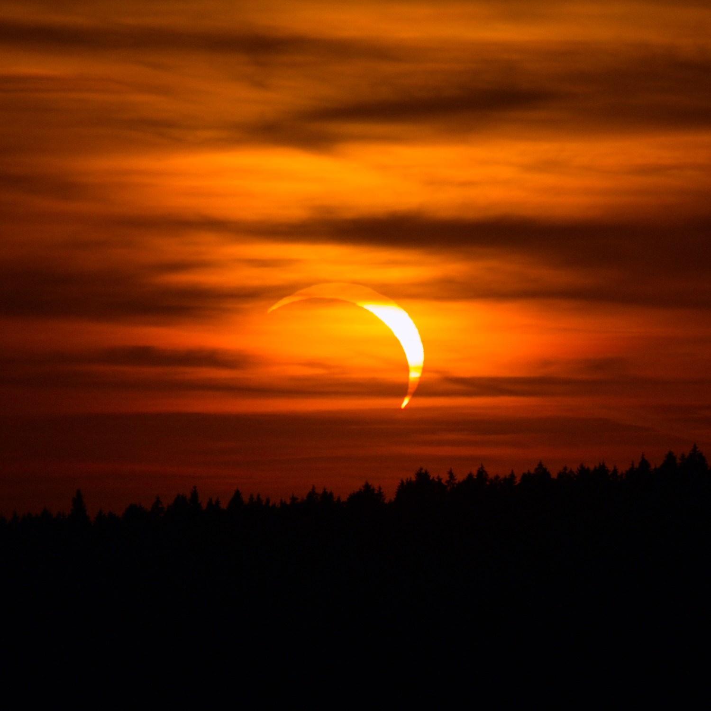
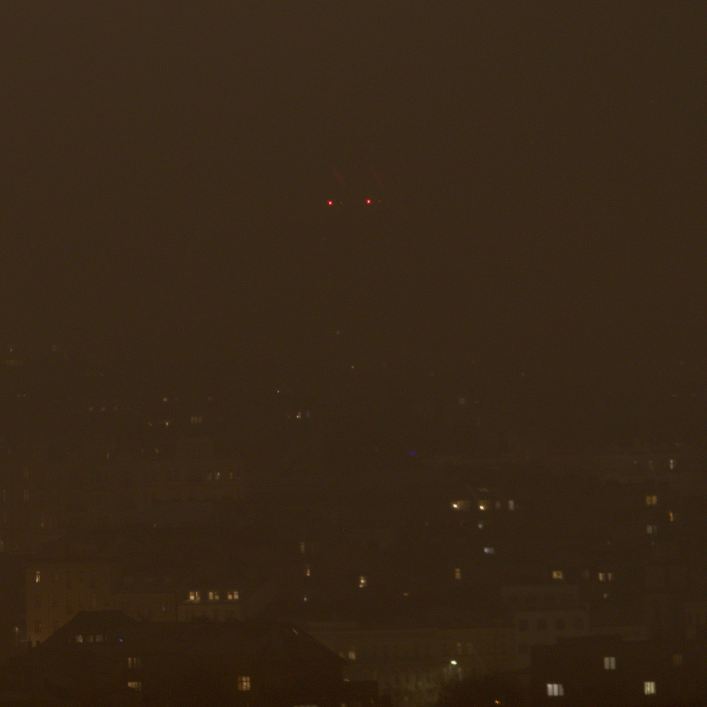

Notice: No one is permitted to share/reproduce any (media) contents of this page publicly without mine (somedoctorcat's) consent
That said, there might be free music downloads of my creations in the future
my, as of now favorite music piece i've made. has a odd 14/4 time signature (3 - 4 - 3 - 4 =~ 14/4).
guitar + synths... peak, that's the absolute banger i'm talking about
Also, first hit of the 3 minute playback mark yaaayy

a chill "ambient" electronic synth piece
piano and reverb bass synths go brrrrrr. also first finished song i made with an actual DAW (REAPER)
an upbeat chill vibes songs. end to the honorable chiptunes era. goodbye famistudio o7
also, funfact, got taken down from apple music and meta rights manager, presumably cuz they think it's AI generated lmao (what a crazy timeline we all live in)
link for all major platforms
my first ever track that was published to streaming platforms. fyi, i was experimenting with music for like a year already at that time
a kinda chiptunes + light rock mix